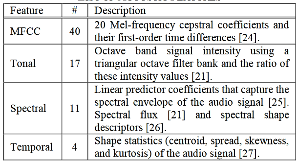
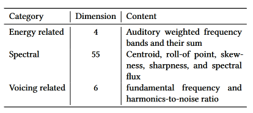

Secondary Databases
| Index | Database | Stim. Type | Stim. Dur. | Stim. N | Feature N. | Ppt. N | Ppt. Expertise | Ppt. Origin | Ppt. Sampling | Ppt. Task | Feature Source | Feature Categories | Citation |
|---|---|---|---|---|---|---|---|---|---|---|---|---|---|
| 1 | EMOPIA | Piano Solo (pop music) | 30 to 40 | 387 | 24 (average of 20 MFCC + note length, velocity, beat note density, key) | 4 total, 1 per song (annotators, not ppts) | not specified | not specified | presumably researchers | classify | MIDI Toolbox | Rhythm, Harmony, Timbre | Hung et al. (2021) |
| 2 | AMG1608 | pop | 30 | 1608 | 72 | 643 MTurk, 22 Taiwan subjects | no restrictions | MTurk | crowdsource | rate | MIRToolbox, YAAFE | Timbre, tonal, spectral, temporal | Chen et al. (2015) |
| 3 | NTUMIR | Famous pop songs | 25 | 60 | 46 | 99 (40 annotations per clip) | no restrictions | campus | convenience | rate | MIRToolbox, Sound Description Toolbox, MA Toolbox | Melody/harmony, spectral, temporal, rhythmic, lyrics | Yang et al. (2011)* |
| 4 | DEAM | pop | 58 full-length and 1744 45-second excerpts | 1802 | 261 | Total n not specified. Minimum annotations per piece: 2013-14: 10; 2015: 5 MTurk workers | no restrictions | 2013-14: MTurk; 2015: MTurk and Lab workers | crowdsourcing, convenience | rate | OpenSMILE | Pitch, Timbre, Voice, Dynamic. Many MFCC features | Aljanaki et al. (2017) |
| 5 | MediaEval2013/emoMusic/1000 songs | western pop of various genres | 45 | 744 | 6670 | min. 10 per clip (100 qualified workers in final HIT) | Nonexperts (Mturk) + experts | MTurk | Crowdsourcing, presumed convenience for experts | rate | OpenSMILE | Pitch, Timbre, Voice, Dynamic. Many MFCC features | Soleymani et al. (2013) |
| 6 | Soundtracks | obscure film soundtracks | 5 | 110 | none? | 116 university students | nonmusicians | campus | convenience | rate, classify | NA | NA | Eerola & Vuoskoski (2011) |
| 7 | PSIC3839 | Chinese popular | full? 180 s excerpts extracted for analyses | 3839 | ns. About 10 feature categories. Unclear dimensionaltiy | 87 | no restrictions | campus | convenience | rate | Librosa | Pitch, Timbre, Harmony, Rhythm | Liang et al. (2022) |
| 8 | CH818 | Chinese pop | 30 | 818 | 15 | 3 | experts | China | convenience | rate | MIRToolbox, PsySound, ChromaToolbox,Tempogram Toolbox | Dynamic, Pitch, Rhythm, Timbre, Harmony | Hu & Yang (2017) |
| 9 | Zhang, Huang, Yang, & Xu (2015) | Chinese pop | 30 | 171 | 84 (dimensionality) | 10 | Nonexperts | not specified | not specified | classify | MAToolbox, MIRToolbox, Coversongs | Dynamics, Timbre, Rhythm | Zhang et al. 2015 |
| 10 | PMEmo | choruses of top pop songs | variable | 794 | 65 (260 dims) | 457 | 366 Chinese university students (44 music majors); 47 English speakers | campus | convenience | rate | ComParE 2013 baseline feature set | Dynamic, Timbre, Pitch (tabulated as energy-related, spectral, voicing related) | Zhang et al. (2018) |
| 11 | NJU-V1 | Music clips (limited detail) | variable | 777 | Lyric (BoW; 50 dims before filtering), MFCC, spectral contrast, chromagram | NA (lastfm tags) | NA | LastFM | crowdsource (webscraping) | NA | NA | Lyric, Timbre, Harmony | Xue et al. (2015) |
| 12 | ISMIR-2012 | popular | 30 or 60 | 2904 | 54 (means + sds) | NA (lastfm tags) | NA | LastFM | crowdsource (webscraping) | NA | MIRToolbox | Dynamics, Rhythm, Timbre (they call this Spectral), Harmony | Song et al. 2012** |
* Dataset not available online
** Only lyrics & timestamps included in public dataset
References
Aljanaki, A., Yang, Y. H., & Soleymani, M. (2017). Developing a benchmark for emotional analysis of music. PloS one, 12(3), e0173392.
Chen, Y. A., Yang, Y. H., Wang, J. C., & Chen, H. (2015, April). The AMG1608 dataset for music emotion recognition. In 2015 IEEE international conference on acoustics, speech and signal processing (ICASSP) (pp. 693-697). IEEE.
Eerola, T. & Vuoskoski, J. K. (2011). A comparison of the discrete and dimensional models of emotion in music. Psychology of Music, 39(1), 18-49. https://doi.org/10.1177/0305735610362821
Hu, X., & Yang, Y. H. (2017). The mood of Chinese Pop music: Representation and recognition. Journal of the Association for Information Science and Technology, 68(8), 1899-1910.
Hung, H. T., Ching, J., Doh, S., Kim, N., Nam, J., & Yang, Y. H. (2021). EMOPIA: A multi-modal pop piano dataset for emotion recognition and emotion-based music generation. arXiv preprint arXiv:2108.01374.
Soleymani, M., Caro, M. N., Schmidt, E. M., Sha, C. Y., & Yang, Y. H. (2013, October). 1000 songs for emotional analysis of music. In Proceedings of the 2nd ACM international workshop on Crowdsourcing for multimedia (pp. 1-6).
Xu, L., Yun, Z., Sun, Z., Wen, X., Qin, X., & Qian, X. (2022). PSIC3839: Predicting the Overall Emotion and Depth of Entire Songs. In Design Studies and Intelligence Engineering (pp. 1-9). IOS Press.
Xue, H., Xue, L., & Su, F. (2015). Multimodal music mood classification by fusion of audio and lyrics. In MultiMedia Modeling: 21st International Conference, MMM 2015, Sydney, NSW, Australia, January 5-7, 2015, Proceedings, Part II 21 (pp. 26-37). Springer International Publishing.
Zhang, J. L., Huang, X. L., Yang, L. F., Xu, Y., & Sun, S. T. (2017). Feature selection and feature learning in arousal dimension of music emotion by using shrinkage methods. Multimedia systems, 23, 251-264.
Zhang, K., Zhang, H., Li, S., Yang, C., & Sun, L. (2018, June). The PMEmo dataset for music emotion recognition. In Proceedings of the 2018 acm on international conference on multimedia retrieval (pp. 135-142).
Song, Y., Dixon, S., & Pearce, M. T. (2012, October). Evaluation of musical features for emotion classification. In ISMIR (pp. 523-528).